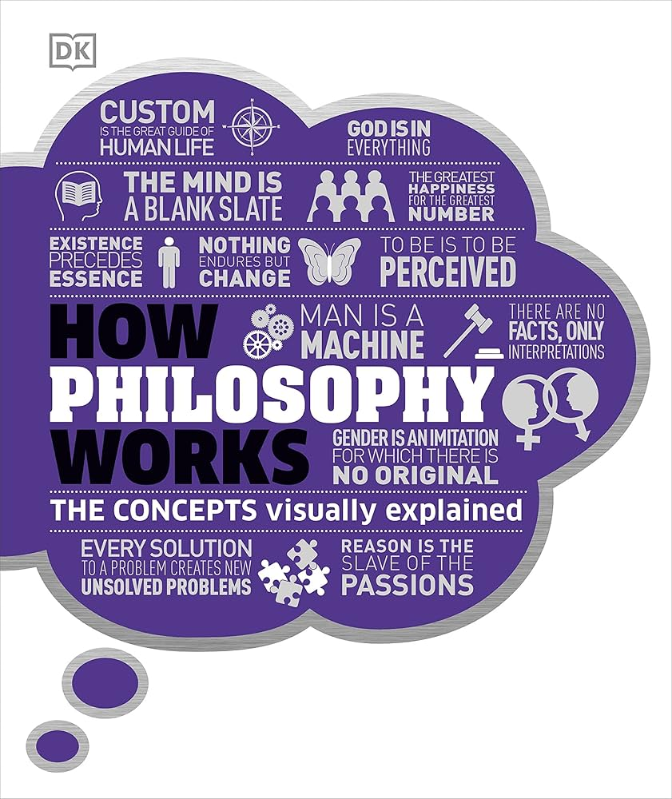

📖《哲学是如何运作的》系统介绍哲学发展史与核心思想，从古希腊的苏格拉底、柏拉图到现代的存在主义、分析哲学。书中涵盖了伦理学、认识论、形而上学、逻辑学等主要分支。
DK出版社将抽象的哲学概念以图解方式呈现，让复杂的哲学论证变得清晰易懂，是哲学入门的理想读物。
如果你看过《苏菲的世界》的话，我估计你非常想要看一看这本书，基本上是总结并且扩写了《苏菲的世界》的哲学介绍。
《苏菲的世界》以小说的形式带领读者走进哲学的大门，而这本书则像是那扇门打开后的全景地图。它系统地梳理了西方哲学的发展脉络，从古希腊的自然哲学到当代的心灵哲学，每一个重要的哲学家和流派都有清晰的介绍。
最棒的是书中的图解。哲学论述往往抽象晦涩，但DK用流程图、概念图、时间线等视觉工具，把复杂的论证过程展示得清清楚楚。比如柏拉图的洞穴寓言、康德的纯粹理性批判、尼采的超人哲学，都有直观的图示。读完《苏菲的世界》后意犹未尽的读者，这本书是最好的进阶选择。它不仅总结了我们"应该知道"的哲学知识，更扩展到了许多当代的前沿议题，如人工智能的伦理问题、意识的本质等，非常值得收藏。